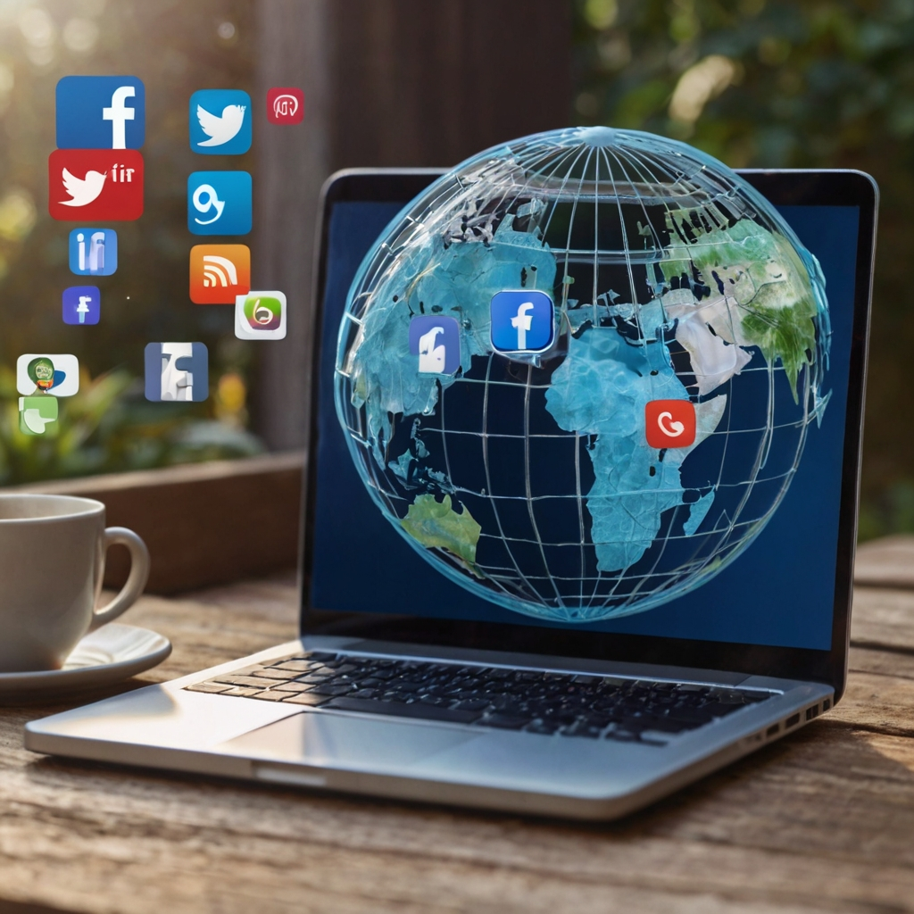

Unleash the Power of Connectivity: A Unified Platform Hosting Leading Apps for Every Aspect of Your Life
In this project, I've designed a multifunctional webpage that seamlessly integrates information from some of the most renowned apps: LinkedIn, Instagram, YouTube, Spotify, and Uber. The objective here is to provide users with a comprehensive experience, catering to various needs ranging from professional networking to entertainment and transportation.
Let's embark on a journey through our webpage to explore how each of these apps is seamlessly embedded and how users can leverage their functionalities without leaving this platform.
- YouTube: For video content ranging from educational to entertainment.
- LinkedIn: For professional networking and career development.
- Instagram: For visual storytelling and social connections.
- Uber: For convenient and reliable transportation services.
- Amazon: For online shopping across a wide range of categories.

YouTube
YouTube is a video-sharing platform that allows users to upload, share, and view videos. Here's a brief explanation in the form of points:
- Creation
- Ownership
- Content
- Monetization
- Community
- Global Reach
- Algorithm
- Policies and Guidelines
- Impact
- Challenges
YouTube was founded in 2005 by Steve Chen, Chad Hurley, and Jawed Karim, who were former employees of PayPal. It was created as a platform for users to share and watch videos online.
In 2006, Google acquired YouTube for $1.65 billion in stock. Since then, it has been a subsidiary of Google, which is itself owned by Alphabet Inc.
YouTube hosts a wide variety of content, including vlogs, music videos, tutorials, reviews, educational videos, and more. Users can upload videos on almost any topic imaginable.
Content creators can monetize their videos through various means, including advertising revenue, channel memberships, merchandise sales, and sponsored content.
YouTube has a large and diverse community of creators and viewers. Users can subscribe to channels, like and comment on videos, and interact with creators through live streams and community posts.
YouTube is available in over 100 countries and supports multiple languages. It has a massive global audience, with billions of users visiting the platform every month.
YouTube uses algorithms to recommend videos to users based on their watch history, preferences, and engagement patterns. This can influence the visibility and popularity of videos on the platform.
YouTube has community guidelines and policies that govern the type of content that can be uploaded. This includes restrictions on nudity, hate speech, harassment, and copyrighted material.
YouTube has had a significant impact on media consumption, entertainment, and culture. It has helped launch the careers of many creators and has become a major source of information and entertainment for people around the world.
Despite its popularity, YouTube has faced criticism and controversies over issues such as content moderation, copyright infringement, misinformation, and its handling of sensitive topics.
LinkedIn has become an essential tool for professionals across various industries, facilitating networking, career development, and business opportunities. However, it also faces challenges such as maintaining user privacy, combating spam and fake profiles, and ensuring the quality of content shared on the platform.
- Creation
- Ownership
- Purpose
- Features
- Profile
- Connections
- Job Searching
- Content
- Groups
- Premium Services
LinkedIn was founded in 2002 by Reid Hoffman, Allen Blue, Konstantin Guericke, Eric Ly, and Jean-Luc Vaillant. It was officially launched in May 2003 as a professional networking platform.
In 2016, Microsoft acquired LinkedIn for $26.2 billion. Since then, it has operated as a subsidiary of Microsoft Corporation.
LinkedIn is a professional networking platform designed to connect professionals and businesses. It allows users to create profiles showcasing their skills, work experience, and education.
LinkedIn offers a range of features, including networking with other professionals, job searching and recruitment, industry news and updates, professional development courses, and groups for networking and discussion.
Users can create detailed profiles highlighting their professional background, skills, achievements, and recommendations from colleagues and clients.
LinkedIn allows users to connect with other professionals in their field, colleagues, classmates, and potential employers or clients. Connections can be used for networking, job opportunities, and business partnerships.
LinkedIn is widely used for job searching and recruitment. Users can search for job openings, apply for positions, and receive recommendations based on their skills and experience.
Users can share articles, updates, and insights on LinkedIn, positioning themselves as thought leaders in their industry and engaging with their professional network.
LinkedIn Groups provide a platform for professionals with similar interests or in the same industry to connect, share knowledge, and participate in discussions.
LinkedIn offers premium subscription services with additional features such as expanded search capabilities, access to LinkedIn Learning courses, and insights into who has viewed your profile.
Instagram has become one of the most popular social media platforms worldwide, with billions of active users sharing billions of photos and videos every day. However, it has faced criticism and controversies over issues such as privacy, content moderation, and the impact of social media on mental health.
- Creation
- Ownership
- Purpose
- Features
- Profile
- Followers
- Explore
- Hashtags and Filters
- Direct Messaging
- Business Tools
Instagram was founded in 2010 by Kevin Systrom and Mike Krieger. It was launched as a photo-sharing app exclusively for iOS devices.
In 2012, Facebook acquired Instagram for approximately $1 billion. Since then, it has operated as a subsidiary of Meta Platforms, Inc. (formerly Facebook, Inc.).
Instagram is a social media platform focused on sharing photos and videos. It allows users to capture, edit, and share visual content with their followers.
Instagram offers a range of features, including photo and video posts, Stories (temporary posts that disappear after 24 hours), Reels (short-form video content), IGTV (long-form video content), and live streaming.
Users can create profiles on Instagram, featuring a bio, profile picture, and a collection of posts. Profiles can be set to public or private, controlling who can view the user's content.
Instagram users can follow other accounts to see their posts and updates in their feed. Followers can interact with posts by liking, commenting, and sharing them.
The Explore page on Instagram recommends content to users based on their interests, activity, and the accounts they follow. It's a discovery tool for finding new accounts and content.
Instagram allows users to add hashtags and apply filters to their posts, making them more discoverable and visually appealing.
Users can send direct messages (DMs) to communicate privately with other users on Instagram. Group chats and disappearing messages are also available.
Instagram offers tools for businesses, including business profiles, analytics, and advertising options. Businesses can use Instagram to promote their products or services, engage with customers, and drive sales.

Uber
Uber has revolutionized the way people think about transportation, offering a convenient and reliable alternative to traditional taxis and public transit. However, it has faced regulatory challenges, controversies over driver wages and working conditions, and concerns about its impact on the environment and urban congestion.
- Creation
- Ownership
- Purpose
- Features
- Availability
- Convenience
- Safety
- Pricing
- Ratings and Reviews
- Expansion
Uber was founded in 2009 by Garrett Camp and Travis Kalanick. It started as a ride-hailing service called UberCab, initially launched in San Francisco, California.
Uber Technologies Inc. is the parent company of Uber, which operates the ride-hailing platform. It went public in May 2019 with its initial public offering (IPO).
Uber is a transportation network company that provides on-demand ride-hailing services through its mobile app. It connects passengers with drivers who provide rides in their own vehicles.
The Uber app allows users to request rides, track their driver's location, and pay for rides electronically. It offers various ride options, including UberX (standard rides), UberPool (shared rides), UberBlack (premium rides), and UberXL (larger vehicles).
Uber operates in over 900 metropolitan areas worldwide, making it available in many cities and regions across the globe.
Uber offers convenience and flexibility to passengers by providing on-demand transportation services. Users can request rides anytime, anywhere, and track their driver's arrival in real-time.
Uber implements safety measures for both passengers and drivers, including background checks, driver screening, vehicle inspections, and insurance coverage.
Uber uses dynamic pricing based on supply and demand, with fares fluctuating during peak times. Users can see an estimated fare before booking a ride and choose their preferred payment method.
After each ride, both passengers and drivers have the opportunity to rate and review each other. This helps maintain accountability and ensures a quality experience for all users.
In addition to ride-hailing, Uber has expanded its services to include food delivery (Uber Eats), package delivery (Uber Connect), and other transportation options such as electric bikes and scooters (Uber Jump).
Amazon
Amazon's impact on e-commerce, technology, and consumer behavior has been profound, reshaping industries and revolutionizing the way people shop and consume goods.
- Creation
- Ownership
- Purpose
- Features
- Prime Membership
- Marketplace
- Amazon Web Services (AWS)
- Innovation
- Customer Service
- Environmental Initiatives
Amazon was founded in 1994 by Jeff Bezos in Seattle, Washington. Initially an online bookstore, it quickly expanded its offerings to include a wide range of products.
Amazon.com, Inc. is the parent company of Amazon. It has grown to become one of the largest and most valuable companies in the world.
Amazon is an e-commerce and cloud computing company that offers a vast selection of products and services to customers worldwide. Its mission is to be Earth's most customer-centric company, where customers can find and discover anything they might want to buy online.
Amazon's website and mobile app allow customers to shop for millions of products across various categories, including electronics, books, apparel, home goods, and more. It offers fast and convenient shipping options, including Amazon Prime's two-day and same-day delivery services.
Amazon Prime is a subscription service that offers members benefits such as free two-day shipping, streaming of movies and TV shows, access to music, exclusive deals, and more. It has millions of subscribers worldwide.
In addition to selling its own products, Amazon operates a marketplace where third-party sellers can list and sell their products. This has greatly expanded the selection available to customers and allowed small businesses to reach a global audience.
AWS is Amazon's cloud computing platform, providing on-demand computing power, storage, and other services to businesses and developers. It is one of the leading cloud service providers globally.
Amazon is known for its focus on innovation and investment in new technologies. This includes initiatives such as drone delivery, cashier-less stores (Amazon Go), and voice-activated assistants (Amazon Alexa).
Amazon prioritizes customer satisfaction and has built a reputation for excellent customer service. It offers easy returns, 24/7 customer support, and customer reviews to help shoppers make informed decisions.
Amazon has committed to sustainability and reducing its carbon footprint. It aims to achieve net-zero carbon emissions by 2040 and has launched initiatives such as Shipment Zero (a vision to make all Amazon shipments net-zero carbon) and The Climate Pledge (a commitment to meet the goals of the Paris Agreement 10 years early).